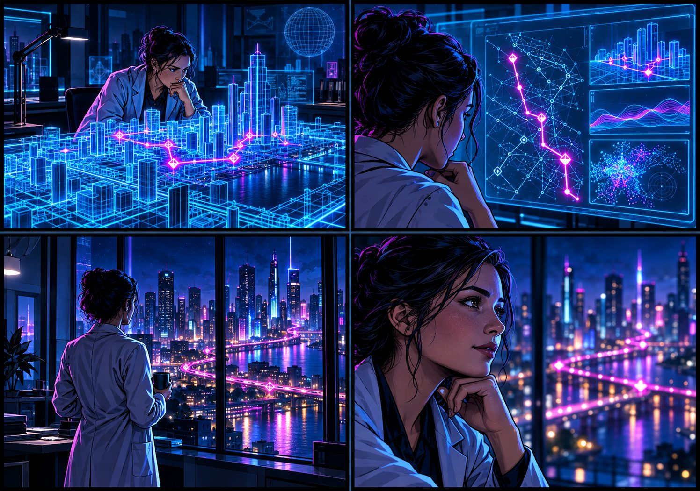
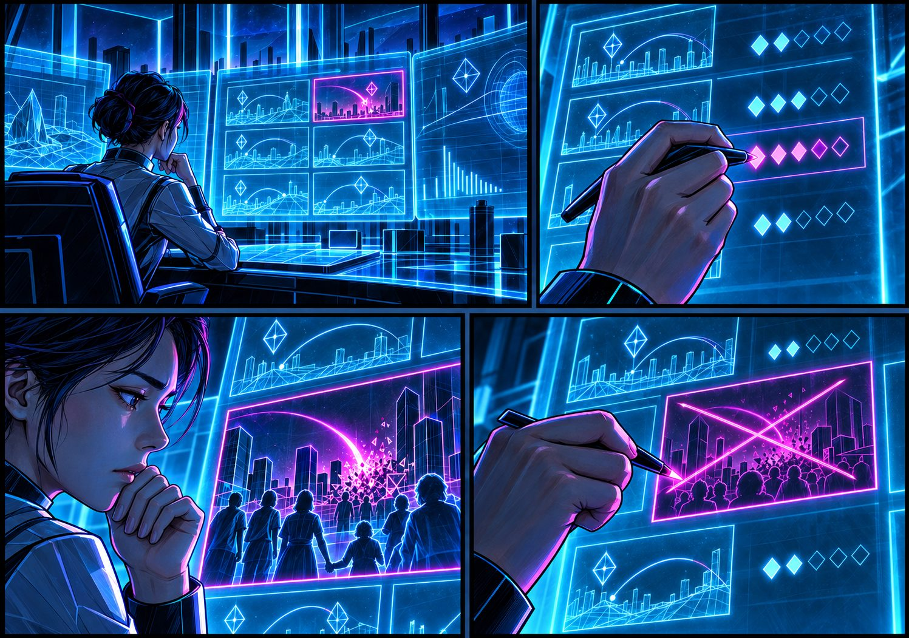
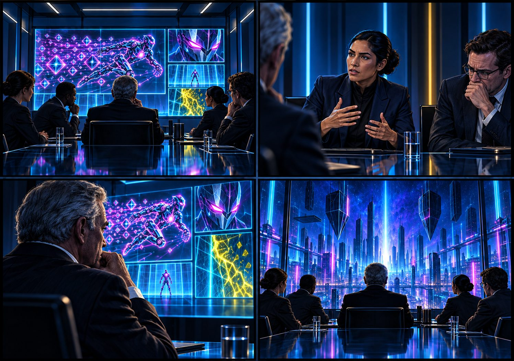

PRODUCTION SYSTEMS / VISUAL + AUDIO
I don’t just make the artifact. I design the pipeline that makes it.
My background started in animation, VFX and production coordination. Today I apply the same production thinking to AI-native systems: specialised roles, creative direction, canonical source material, strict handoffs, local generation, quality control and human approval. The result is repeatable media production built with technology that small teams can actually access.
- Visual + audio
- Local-first production
- Consumer GPU
- Human quality gates
- Repeatable pipelines
- Real outputs
Follow-up to a conversation with Heather Page at TribalScale about media and AI product work. The private source repositories stay private; the outputs below are the evidence.
01 / THE SHIFT
The production model survived. The crew changed.
TRADITIONAL
- Human intent
- Coordinated specialists
- Production tooling
- Review
- Artifact
AI-NATIVE
- Human intent
- Humans + agents + models
- Production contracts
- Generative tooling
- Review
- Repeatable artifacts
Humans are still in the loop. What changed is the roster: a traditional production coordinates artists, editors, technical specialists, software, review rounds and delivery. An AI-native one coordinates humans, agents, local and cloud models, deterministic scripts, manifests and review gates. The skill underneath is the same: turn creative intent into a controlled process that reliably reaches delivery.
I used to make assets inside production pipelines. Now I design the pipelines.
02 / ONE PHILOSOPHY, TWO MEDIA PIPELINES
Same production philosophy. Different media.
Two systems I built share one architecture. Step through the stages to see what each one does in a visual pipeline and an audio pipeline.
VISUAL · PANELFORGE
AUDIO · AUDIO STUDIO
03 / VISUAL · PANELFORGE → NEURAL BREACH
The hard problem isn’t whether a model can make one good image. It’s whether the system can keep making the right images.

What PanelForge is
PanelForge is a local-first visual production pipeline built to solve a problem that single-image generation doesn’t: continuity at production scale. Story briefs and approved visual references are interpreted into structured art direction, passed through a strict production contract, and rendered locally through a reference-conditioned image pipeline. Preflight checks, deterministic seeds, sequential GPU scheduling, recovery and resumable production turn generation into a repeatable workflow rather than a collection of prompts.
The output is Neural Breach, a continuing comic project presented through a custom digital reader. The reader is the presentation layer for the finished work; the pipeline’s job is the frames.
Canon is a production asset
A single good frame is easy. Keeping a cast, costumes and locations stable across hundreds of frames is the production problem. The production-reference design, written to take Neural Breach beyond isolated panels, gives every canonical reference:
- a stable ID and a type: character, location, entity, interface or style;
- an approval state: draft, approved or retired;
- an ordered place in the reference set sent to both director and renderer;
- a deterministic seed per panel, and output dimensions independent of reference size.
Intelligence versus machinery
CREATIVE INTELLIGENCE
- Brief + canon
- AI director reads both
- Structured direction: camera, composition, lighting, continuity
PRODUCTION MACHINERY
- Validate before any GPU work
- Render, one panel at a time
- Recover, checkpoint, resume
- Output → human creative review
Use intelligence where judgment is required. Use deterministic machinery where repeatability is required.


How it works, and what it runs on
The pipeline was developed for one consumer machine: Windows with a single RTX 4070 (12 GB VRAM), Ollama running Qwen3-VL as a local art director, and ComfyUI running FLUX.2 Klein for reference-conditioned rendering, orchestrated with Python and PowerShell.
The single-GPU limit shaped the design: director and renderer never share the card at the same moment, the director model is unloaded before rendering, and a known ComfyUI out-of-memory failure state is detected and recovered from automatically. A hosted model can direct panels instead when a piece justifies the cost; local direction remains the default for bulk work. Orchestration logic is covered by unit tests that need no live GPU services.
04 / AUDIO · AUDIO STUDIO
Text remains canonical. Audio is a production rendering of it.
Audio Studio applies the same production architecture to sound. Canonical conversations and documents move through editorial roles, producer synthesis and a strict episode contract before local voice generation. Individual segments can be regenerated independently, final audio is assembled deterministically, and technical validation remains separate from human listening approval.
ONE SOURCE, FOUR CONTROLLED TAKES
ROWS editorial treatment COLUMNS delivery treatment
NOW SELECTED
Produced · Conversational
Ideas and positions kept, edited for spoken flow, delivered conversationally.
Verbatim and produced differ in what is said; conversational and measured differ in how it is performed. Two independent dials, four predictable outputs: the pipeline makes controlled variants, not random ones.
Who decides what
- Source stays canonical and read-only, with its provenance and a content hash.
- Writer’s Room agents advise on tightening, structure, explanation, humour and audience. They never generate audio.
- One producer resolves the competing advice and emits a strict, versioned episode contract. That is how it avoids prompt soup.
- Cast and voice are separate registries, so a speaker identity persists across productions.
- Segments render one line at a time, so a failed line is retried alone and an engine can be swapped behind an adapter.
THE HUMAN GATE
Automation can prove that a file rendered correctly. It can’t prove that the performance is good.
Technical checks confirm the file exists, parses, has the right format, a plausible duration and a matching hash. They cannot tell you whether it is intelligible, faithful, correctly voiced, well paced or pleasant to hear. A person listens against a checklist: dialogue accuracy, intelligibility, speaker identity, delivery and pacing, artifacts. Acceptance is bound to the exact WAV hash, so if the audio changes, the old approval does not carry over.
How it works, and what it runs on
Cloud-capable agents can handle editorial reasoning and script development. Voice generation runs on local text-to-speech, behind an adapter boundary so the contract never depends on a single engine; Qwen3-TTS and Chatterbox-class models are the initial candidates under evaluation. Final assembly uses deterministic tooling for sequencing, pauses, loudness normalisation, fades and metadata, with a production manifest recording each take.
The four clips above are the pilot output. They are embedded here as static files; the source conversation text and voice references stay private.
05 / THE PRODUCTION PRINCIPLE
Use intelligence where judgment is required. Use deterministic machinery where repeatability is required. Keep the human at the acceptance boundary.
06 / WHY ACCESSIBLE TECHNOLOGY MATTERS
Frontier models are an option, not the architecture.
A production system is only useful if its economics survive repeated use. I design around the actual constraints: available hardware, model cost, latency, failure rates, quality thresholds and human review time.
The goal isn’t to show what is possible with unlimited compute. It’s to find out what production capability an individual or small team can build with hardware and software they can realistically get.
- Visual: runs on a single consumer GPU, with paid cloud direction reserved for work that justifies it.
- Audio: spend intelligence on editorial decisions, run repeatable synthesis locally, regenerate only the segment that failed.
- Local generation still has hardware, power, setup and time costs. The claim is low marginal generation cost, not zero cost.
07 / WHERE THE SYSTEMS APPROACH COMES FROM
A production background, applied to a new crew.
- 01 Animation / VFX
- 02 Production coordination
- 03 Product & experience design
- 04 AI production systems
Then I build the system and produce the output.
What is canonical? Where does judgment happen? What must be structured, and what can be deterministic? What can run locally, and where is frontier intelligence worth paying for? How does it recover from failure, and where does a human approve the result? Those are the questions I start with. These two pipelines are what came out the other side.